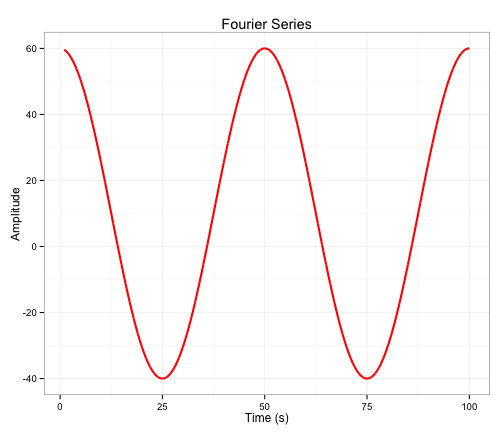

This shiny app provides an interactive interface to genenerate Fourier series by varying the key input parameters
Leanne P
This shiny app provides an interactive interface to genenerate Fourier series by varying the key input parameters
The simple Fourier series is defined as
\[f(x)= A_0 + A_1 cos(2\pi * t / p + \phi) \]
where
The following shows a sample plot with parameters \(A_0\) = 10, \(A_1\)=5, \(p\) = 50 and \(\phi\)=0

Hopefully this simple shiny application will be useful to others.